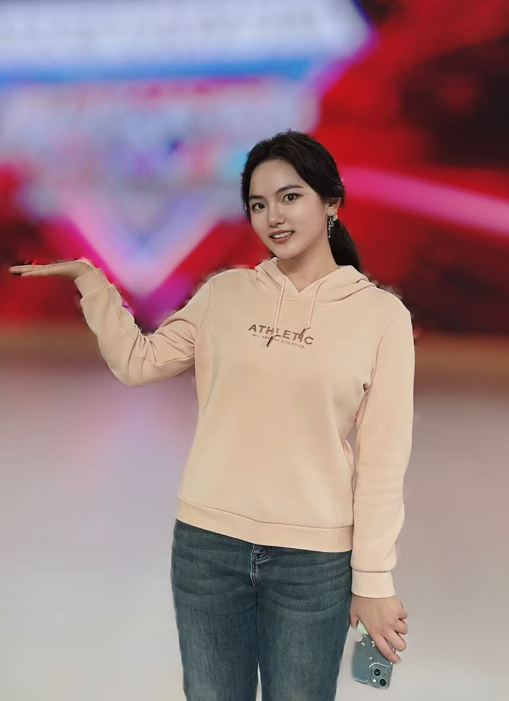
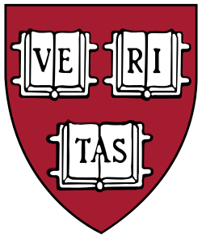

|
Zhiyan Li
Hi 👋 I am Zhiyan Li, a senior undergraduate in ACM Honors Class of Shanghai Jiao Tong University, majoring in Computer Science. Currently, I'm a visiting student at Harvard University, supervised by Prof. Yilun Du and Dr. Mengyu Wang, and actively working with Weirui Ye and Kaichen Zhou at MIT. Previously, I worked at MVIG-RHOS lab in Shanghai Jiao Tong University, co-advised by Prof. Cewu Lu and Prof. Yonglu Li.
My research interests include multimodal perception in robot learning (especially tactile modality), lifelong learning for robotics and test-time adaptation using steering policies and agentic methods.
I am seeking a PhD position in Fall 2027.
GitHub /
Email /
CV /
|

|
News
- Sep. 2026: Became a junior organizer and reviewer for the 1st Workshop on Physical World AI (PhysWorldAI) at NeurIPS 2026.
- June 2026: Joined the Embodied Minds Lab at Harvard, advised by Prof. Yilun Du, and the Harvard AI and Robotics Lab, advised by Dr. Mengyu Wang.
- June–July 2025: Visiting student at the Institute for Interdisciplinary Information Sciences (IIIS), Tsinghua University.
- June 2025: Joined the MVIG-RHOS Lab at Shanghai Jiao Tong University as a research intern, co-advised by Prof. Cewu Lu and Prof. Yonglu Li.
- June 2025: Teaching Assistant for Principles and Practice of Computer Algorithms at Shanghai Jiao Tong University.
- Feb. 2025: Teaching Assistant for Data Structures (Honors) at Shanghai Jiao Tong University.
- Sep. 2023: Joined the ACM Honors Class at Shanghai Jiao Tong University.
|
Education
|
|

|
Harvard University, Visiting Student, Present
|
|

|
Tsinghua University, Visiting Student at the Institute for Interdisciplinary Information Sciences (IIIS), June–July 2025
|
|

|
Shanghai Jiao Tong University, B.S. in Computer Science, 2023-2027 (Expected)
|
|
Awards and Scholarships
- Foresight-Sequoia Talent Development Fund (5 Outstanding Students in ACM Class per year), 2025
- Zhiyuan Honors Scholarship (top 5% students in SJTU annually), 2023,2024,2025
- Shanghai Jiao Tong University Merit Scholarship, 2025
- Provincial Second Prize , China Undergraduate Mathematical Contest in Modeling, 2024
- Provincial Second Prize , The Chinese Mathematics Competition, 2024
- Silver Medal, National Second Prize , 39th Chinese Physics Olympiad, 2022
|
|
{kind=link}